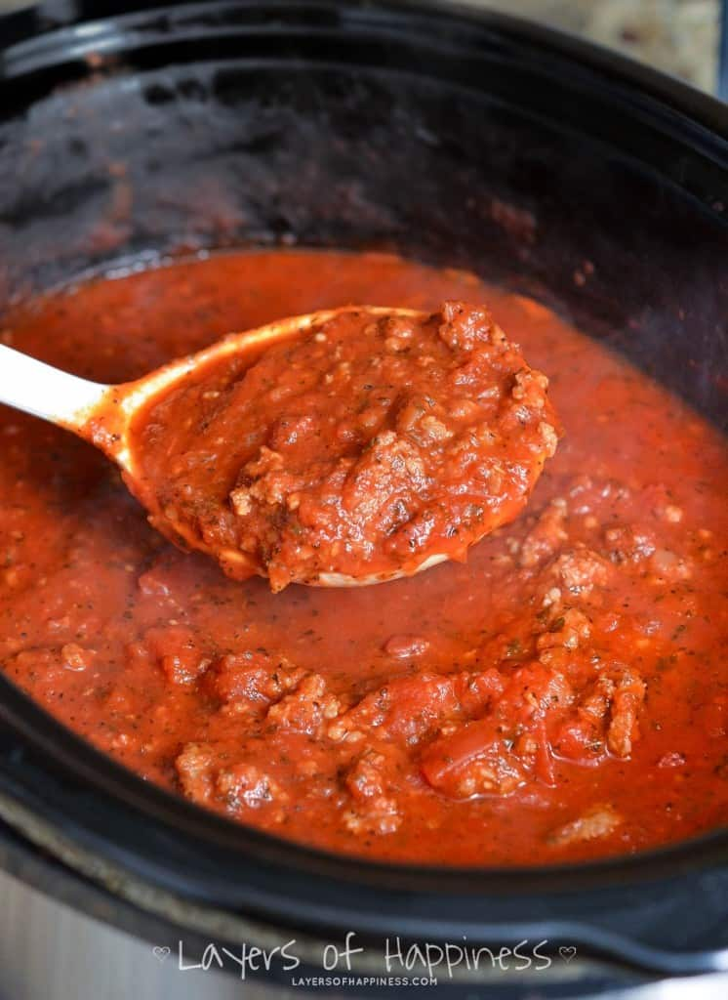

Spaghetti Sauce

Description
This sauce is easy, cooks in a few hours.
Ingredients
- Spaghetti sauce seasoning packet
- 1 large jar Prego spaghetti sauce
- 1 14 ounce can diced tomatoes
- 1 8 ounce can tomato paste
- green pepper
- onion
- celery
- carrots
Steps
- Dice the vegetables
- Put the sauce into the crock pot
- Add the vegetables
- Add in seasoning
- Add in tomaotes and paste
- Stir thoroughly
- Cook on low for 7 hours, or high for 4 hours
Serves six to eight meals.